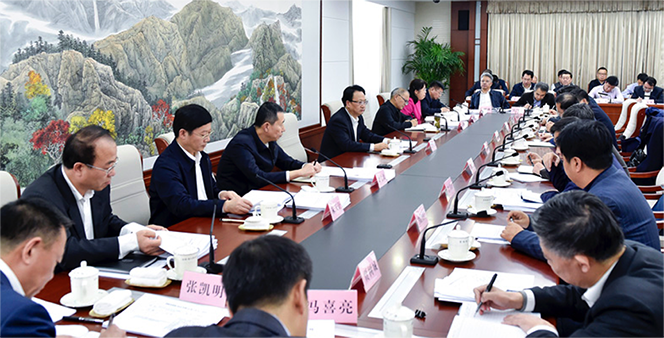

根据吉林省残联干部作风大整顿活动领导小组办公室《关于机关部室、直属单位主要领导开展谈心谈话和直属单位班子干部作风大整顿活动专题会议安排》的通知要求，提请省残联干部作风大整顿活动领导小组办公室同意，省残疾人中等职业学校于10月11日召开了干部作风大整顿活动专题会议，省残联党组成员、副理事长万宇出席了本次会议。
会上，省残疾人中等职业学校书记从破“五弊”5个清单，查摆梳理突出问题、交出“5笔账”及下一步工作打算三个方面着手，对省残疾人中等职业学校参与为期50天的全省干部作风大整顿活动进行了总结汇报。